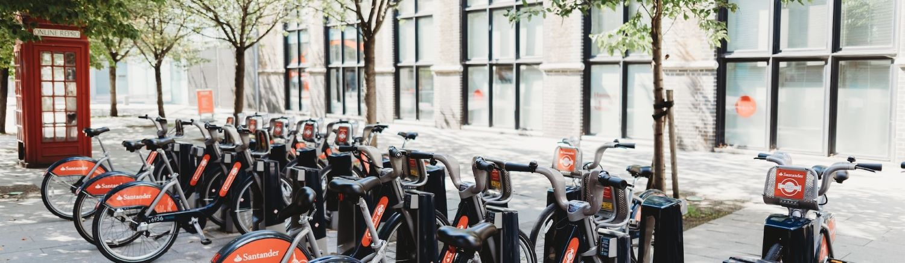
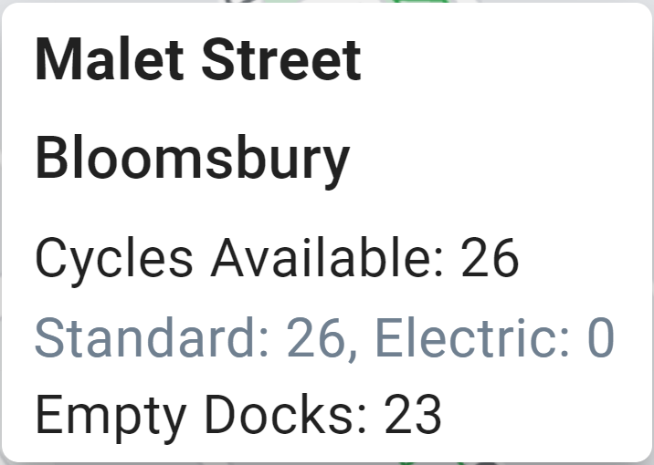

API Fetch & Display - Santander Cycles - Web Dev 3
The Santander Cycles Companion app
To see the live demo or the source code, please click the relevant links below.
Tools/knowledge applied in this project
- React, Material UI
- Fetch real-time data from various APIs
- Autocomplete input and snackbar feedback components to increase accessibility
- Marker clustering for performant map rendering
- Responsive web design to accommodate a wide range of screen sizes
Overview
Santander Cycles is a bicycle sharing service. It is intended for short commutes that replace driving or the public transport, while providing the convenience of one-way rentals. This means that you can rent a bicycle from any of its stations, cycle your planned trip, then return it to a different station.
In this project, I created the Santander Cycles Companion app as an all-in-one platform for your Santander Cycles usage within London. It provides real-time insight into the availability of bicycles at every station and surrounding information such as stations near a given location, routing, and the weather.
List of Features
- Inspect the availabilities of bicycles (standard and electric) and the number of empty docks at every station *
- Search for stations near a location by name or postcode, then inspect the aerial view
- Set routing from station to station to get directions, distance, and the expected cycling duration
- View London weather information to see if it is suitable for cycling
* You can still park nearby a station at no extra cost when all docks are occupied
Elements of the Map Explained
| Element | Description |
|---|---|
|
|
Represents a cluster of bicycle stations in the vicinity. If you zoom into the map further, the cluster will burst into smaller clusters and/or individual cycle stations. The value in the blue circle indicates the total count of individual cycle stations. |
|
|
Represents a bicycle station. A station contains multiple bicycle docks, each of which can hold a bicycle. Clicking the marker reveals a popover of station details. |
|  | Is a popover of station details. It displays the number of bicycles (standard and electric) currently available to be rented from a station and the number of unoccupied docks. |
|
|
Represents the searched location if you use the search bar. |
APIs Used
- Transport for London Santander Cycles API to retrieve bicycle availabilities at stations
- Google Maps Embed API to display a map on the website
- Google Maps JavaScript API to render markers and clusters of markers on the map
- Google Maps Directions API to render a route on the map and calculate the distance and duration
- LocationIQ API for forward geocoding with autocomplete
- WeatherAPI to retrieve weather information
The Santander Cycles Companion app
To see the live demo or the source code, please click the relevant links below.